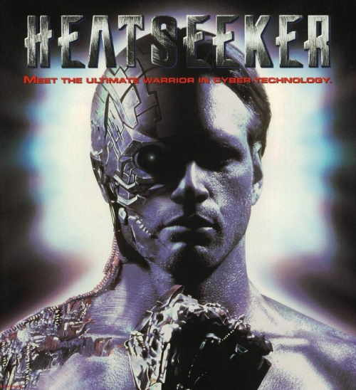

Movie review by : SFAM
Year : 1995
Directed by : Albert Pyun
Written by : Albert Pyun (story and screenplay), Christopher Borkgren (screenplay)
Degree of Cyberpunk visuals : Very Low
Correlation to Cyberpunk themes : Low
Rating : 3/10
Key cast members :

Overview: This has to qualify as one of the most misleading promotional photos ever. This movie has NONE of those cool cyborg stuff in it. Heatseeker is a low budget martial arts tournament fight movie wrapped in a cocoon of cheesy dialogue that calls the fighters cyborgs - but there is pretty much NO visuals to that effect. In this movie which takes place in the near-future, where cyber-corporations, emeshed in a global competition to be the leader in cyber technology have devised a martial arts tournament to see who has the best cyber-equipment. Chance O'Brian (played by Keith Cooke) is the martial arts champion of the world, and is going to marry his trainer, Jo (played by Tina Cote). Some evil, nasty, mean, rotten (did I get the point across) cyber corporation types abduct his wife and force him to fight in a tournament of cyborg fighters to give the fight legitimacy. Also, Jo has to have sex and train the evil, nasty, powerful, mean and rotten cyber-corporation's champion, who just happens to be Chance's chief rival. The tournament goes on, but I think you can pretty much guess how this goes.
The Bottom Line: From a story perspective, Heatseeker doesn't even make an attempt to be anything but a low-priced piece of crap. The acting is downright horrid in places and the characters are the epitome of one dimensional. The only redeeming value in this are the fight sequences, which are usually decent. For this reason, I give it an extra star for the fight sequences, but I take one away for the misleading promotional picture, and another away from the completely non-believable ending sequence.